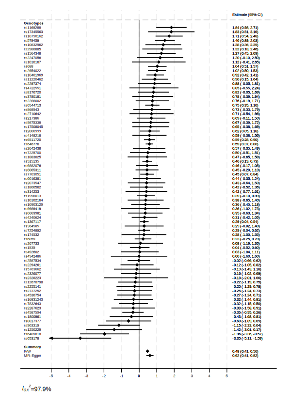
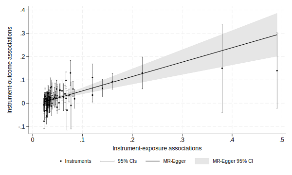
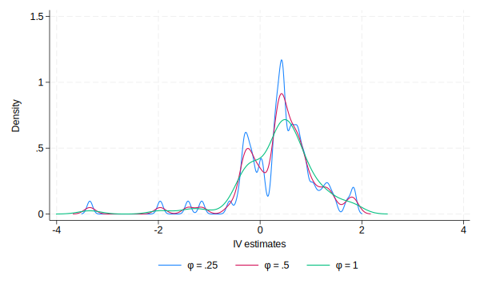
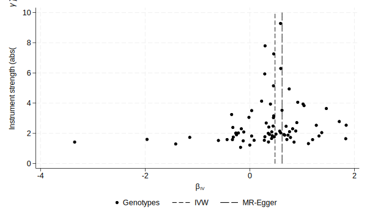
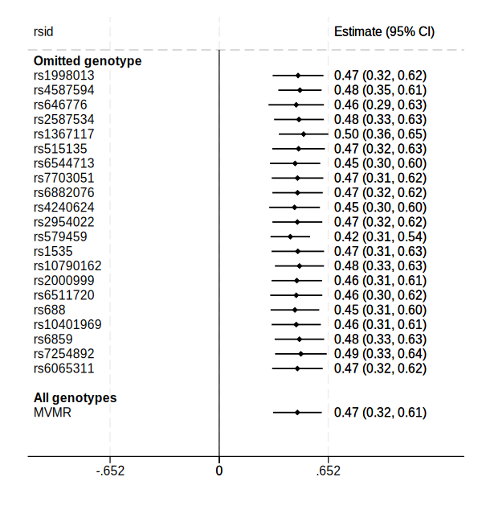

use https://raw.github.com/remlapmot/mrrobust/master/dodata, clearExamples from helpfiles in the mrrobust package
Install the mrrobust package
net install github, from("https://haghish.github.io/github/")
gitget mrrobustRead in example data
Read in example data from Do et al. (2013).
Select observations (p-value with exposure < 10-8).
gen byte sel1 = (ldlcp2 < 1e-8)mrforest examples
Forest plot of genotype specific IV estimates and IVW and MR-Egger estimates, labelling the genotypes with their RSID.
mrforest chdbeta chdse ldlcbeta ldlcse if sel1==1, ivid(rsid) ///
xlabel(-5,-4,-3,-2,-1,0,1,2,3,4,5)
qui gr export mrforest.svg, width(600) replace
mregger examples
Using the data provided by Do et al. (2013) recreate from Bowden et al. (2016) the Table 4, LDL-c “All genetic variants” estimates.
IVW (with fixed effect standard errors, i.e. variance of residuals [residual variance] constrained to 1).
mregger chdbeta ldlcbeta [aw=1/(chdse^2)] if sel1==1, ivw fe Number of genotypes = 73
Residual standard error constrained at 1
------------------------------------------------------------------------------
| Coefficient Std. err. z P>|z| [95% conf. interval]
-------------+----------------------------------------------------------------
chdbeta |
ldlcbeta | .4815055 .038221 12.60 0.000 .4065938 .5564173
------------------------------------------------------------------------------MR-Egger (with SEs using an unconstrained residual variance [multiplicative random effects]).
mregger chdbeta ldlcbeta [aw=1/(chdse^2)] if sel1==1 Number of genotypes = 73
Residual standard error = 1.548
------------------------------------------------------------------------------
| Coefficient Std. err. z P>|z| [95% conf. interval]
-------------+----------------------------------------------------------------
chdbeta |
slope | .6173131 .1034573 5.97 0.000 .4145405 .8200858
_cons | -.0087706 .0054812 -1.60 0.110 -.0195136 .0019723
------------------------------------------------------------------------------MR-Egger reporting I2GX statistic and heterogeneity Q-test.
mregger chdbeta ldlcbeta [aw=1/(chdse^2)] if sel1==1, gxse(ldlcse) heterogi Q_GX statistic (weighted) = 3454.26
I^2_GX statistic (weighted) = 97.92%
Number of genotypes = 73
Residual standard error = 1.548
Ruecker's Q for heterogeneity; chi2(71) = 170.11 (p = 0.0000)
I-squared statistic = 58.3% (95% CI 45.8%, 67.8%)
------------------------------------------------------------------------------
| Coefficient Std. err. z P>|z| [95% conf. interval]
-------------+----------------------------------------------------------------
chdbeta |
slope | .6173131 .1034573 5.97 0.000 .4145405 .8200858
_cons | -.0087706 .0054812 -1.60 0.110 -.0195136 .0019723
------------------------------------------------------------------------------MR-Egger using a t-distribution for inference (p-values) & CI limits.
mregger chdbeta ldlcbeta [aw=1/(chdse^2)] if sel1==1, tdist Number of genotypes = 73
Residual standard error = 1.548
------------------------------------------------------------------------------
| Coefficient Std. err. t P>|t| [95% conf. interval]
-------------+----------------------------------------------------------------
chdbeta |
slope | .6173131 .1034573 5.97 0.000 .4110251 .8236012
_cons | -.0087706 .0054812 -1.60 0.114 -.0196998 .0021585
------------------------------------------------------------------------------MR-Egger using the radial formulation.
mregger chdbeta ldlcbeta [aw=1/(chdse^2)] if sel1==1, radial Number of genotypes = 73
Residual standard error = 1.547
------------------------------------------------------------------------------
| Coefficient Std. err. z P>|z| [95% conf. interval]
-------------+----------------------------------------------------------------
radialGD |
radialGP | .642582 .1157871 5.55 0.000 .4156434 .8695205
_cons | -.5737301 .3545658 -1.62 0.106 -1.268666 .1212062
------------------------------------------------------------------------------MR-Egger using the radial formulation and reporting heterogeneity (Rucker’s) Q-test.
mregger chdbeta ldlcbeta [aw=1/(chdse^2)] if sel1==1, radial heterogi Number of genotypes = 73
Residual standard error = 1.547
Ruecker's Q for heterogeneity; chi2(71) = 169.98 (p = 0.0000)
I-squared statistic = 58.2% (95% CI 45.8%, 67.8%)
------------------------------------------------------------------------------
| Coefficient Std. err. z P>|z| [95% conf. interval]
-------------+----------------------------------------------------------------
radialGD |
radialGP | .642582 .1157871 5.55 0.000 .4156434 .8695205
_cons | -.5737301 .3545658 -1.62 0.106 -1.268666 .1212062
------------------------------------------------------------------------------mreggersimex examples
SIMEX suppressing bootstrapped SEs (for speed - remove the noboot option to obtain SEs).
mreggersimex chdbeta ldlcbeta [aw=1/chdse^2] if sel1==1, gxse(ldlcse) seed(12345) noboot
qui gr export mreggersimex-plot.svg, width(600) replace Number of genotypes = 73
Bootstrap replications = 0
Simulation replications = 50
------------------------------------------------------------------------------
| Coefficient Std. err. z P>|z| [95% conf. interval]
-------------+----------------------------------------------------------------
slope | .6256194 . . . . .
_cons | -.0089987 . . . . .
------------------------------------------------------------------------------mreggerplot examples
mreggerplot chdbeta chdse ldlcbeta ldlcse if sel1==1
qui gr export mreggerplot.svg, width(600) replace
mrmedian examples
Weighted median estimator.
mrmedian chdbeta chdse ldlcbeta ldlcse if sel1==1, weighted Number of genotypes = 73
Replications = 1000
------------------------------------------------------------------------------
| Coefficient Std. err. z P>|z| [95% conf. interval]
-------------+----------------------------------------------------------------
beta | .4582573 .0633137 7.24 0.000 .3341648 .5823499
------------------------------------------------------------------------------mrmodal examples
mrmodalplot chdbeta chdse ldlcbeta ldlcse if sel1==1, seed(12345)
qui gr export mrmodalplot.svg, width(600) replace Number of genotypes = 73
Replications = 1000
Phi = .25
------------------------------------------------------------------------------
| Coefficient Std. err. z P>|z| [95% conf. interval]
-------------+----------------------------------------------------------------
beta | .4198713 .2267297 1.85 0.064 -.0245107 .8642533
------------------------------------------------------------------------------
Number of genotypes = 73
Replications = 1000
Phi = .5
------------------------------------------------------------------------------
| Coefficient Std. err. z P>|z| [95% conf. interval]
-------------+----------------------------------------------------------------
beta | .4218667 .1981169 2.13 0.033 .0335647 .8101688
------------------------------------------------------------------------------
Number of genotypes = 73
Replications = 1000
Phi = 1
------------------------------------------------------------------------------
| Coefficient Std. err. z P>|z| [95% conf. interval]
-------------+----------------------------------------------------------------
beta | .4917353 .1356432 3.63 0.000 .2258796 .757591
------------------------------------------------------------------------------
Simple mode estimator.
mrmodal chdbeta chdse ldlcbeta ldlcse if sel1==1 Number of genotypes = 73
Replications = 1000
Phi = 1
------------------------------------------------------------------------------
| Coefficient Std. err. z P>|z| [95% conf. interval]
-------------+----------------------------------------------------------------
beta | .4917353 .1276278 3.85 0.000 .2415894 .7418812
------------------------------------------------------------------------------Weighted mode estimator.
mrmodal chdbeta chdse ldlcbeta ldlcse if sel1==1, weighted Number of genotypes = 73
Replications = 1000
Phi = 1
------------------------------------------------------------------------------
| Coefficient Std. err. z P>|z| [95% conf. interval]
-------------+----------------------------------------------------------------
beta | .4789702 .0663145 7.22 0.000 .3489963 .6089441
------------------------------------------------------------------------------Simple mode estimator with NOME assumption.
mrmodal chdbeta chdse ldlcbeta ldlcse if sel1==1, nome Number of genotypes = 73
Replications = 1000
Phi = 1
------------------------------------------------------------------------------
| Coefficient Std. err. z P>|z| [95% conf. interval]
-------------+----------------------------------------------------------------
beta | .4917353 .1266936 3.88 0.000 .2434204 .7400501
------------------------------------------------------------------------------mrfunnel examples
mrfunnel chdbeta chdse ldlcbeta ldlcse if sel1==1, xlrange(0 10)
qui gr export mrfunnel.svg, width(600) replace
Leave one out analysis
Create a smaller subset of data.
gen byte sel2 = (ldlcp2 < 1e-25)Perform leave one out analysis using the IVW estimator
mrleaveoneout chdbeta ldlcbeta if sel2==1, gyse(chdse) genotype(rsid) noprint
qui gr export mrleaveoneout-plot-01.svg, width(600) replacePerform leave one out analysis using MVMR collecting the estimate for LDL-c.
mrleaveoneout chdbeta ldlcbeta hdlcbeta tgbeta if sel2==1, ///
method(mvmr) gyse(chdse) genotype(rsid) noprint
qui gr export mrleaveoneout-plot-02.svg, width(600) replace
References
Bowden, Jack, George Davey Smith, Philip C Haycock, and Stephen Burgess. 2016. “Consistent estimation in Mendelian randomization with some invalid instruments using a weighted median estimator.” Genetic Epidemiology 40 (4): 304–14. https://doi.org/10.1002/gepi.21965.
Do, Ron, Cristen J Willer, Ellen M Schmidt, Sebanti Sengupta, Chi Gao, Gina M Peloso, Stefan Gustafsson, et al. 2013. “Common Variants Associated with Plasma Triglycerides and Risk for Coronary Artery Disease.” Nature Genetics 45 (11): 1345–52. https://doi.org/10.1038/ng.2795.